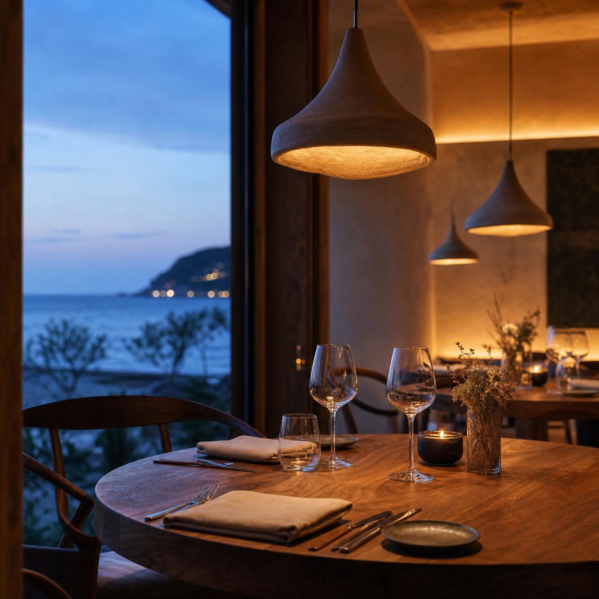

Ресторанный гид · Крым
Лучшие места
в вашем городе
Открывайте атмосферные рестораны, авторскую кухню и незабываемые впечатления.
31 заведенийв каталоге онлайн
Выберите настроение
Категории заведений
Выбор гостей
Популярные рестораны
Всегда под рукой
Ваш город.
Ваши места.
Сохраняйте любимые рестораны, собирайте подборки и планируйте следующий вечер в «Место».
Избранное
Маршруты
Отзывы
Простой выбор
Как это работает
Найдите ресторан по городу, категории или настроению.
Категория, город и кухняПроверьте часы работы, особенности и все адреса сети.
Меню, режим работы и удобстваПерейдите на карту и выберите удобную дорогу до заведения.
Карта, адрес и филиалыСохраните ресторан и оставьте отзыв после визита.
Избранное, оценка и отзывГотовые маршруты
Подборки
Города Крыма
31заведение в каталоге
150+поводов найти новое
20+категорий и фильтров
4.8средняя оценка мест
Одна система — три роли
У каждого
своё место
Показываем, как выглядит продукт для команды «Места»: от городской витрины до кабинета ресторатора.
Место · администрирование
Добрый день, Ксения
КП
Заявки на модерации12+3 за сегодня
Посещения гида18 542+34,2% к неделе
Переходы на сайт2 845+10,8% к неделе
Новые отзывы156+7,2% к неделе
Статистика за неделю
Просмотры ПереходыПоследние заявки

Ресторан «Прибой»Ялта · Рестораны- Кофейня «Север»Симферополь · Кофейни
- Бар «Линия»Севастополь · Бары
Источники переходов
18 542визита
- Прямой заход 46%
- Поиск 30%
- Соцсети 15%
- Реферальные 9%
Ваше заведение
Marea · Ялта
МС
Просмотры карточки5 842+12,5%
Переходы на сайт1 248−8,3%
Построили маршрут342+15,2%
Добавили в избранное89+6,1%
Интерес к вашему месту
Просмотры карточкиБыстрые действия
Отзывы гостей
- АИ
Алина ИгоревнаАтмосферно и спокойно, вернёмся на закат.★★★★★
- ДС
Дмитрий СавельевКрасивый вид и внимательная команда.★★★★★
- МБ
Мария БеловаОтличный вечер, особенно понравилось меню.★★★★★
Фотогалерея
Все категории
Выберите формат — затем уточните кухню, город, парковку или возможность прийти с питомцем.
Каталог мест
Все места города
Популярные и новые заведения, собранные в одном списке.
Единый каталог «Места»Опубликованные карточки редакции, пользователей и владельцев заведений
В каталоге показываются только опубликованные карточки «Места». Для построения маршрута можно открыть внешнюю карту.
Избранное
Места, к которым хочется вернуться
Ваш голос
Отзывы помогают выбирать лучше
Откройте карточку заведения и поделитесь впечатлением — отзыв появится после модерации.